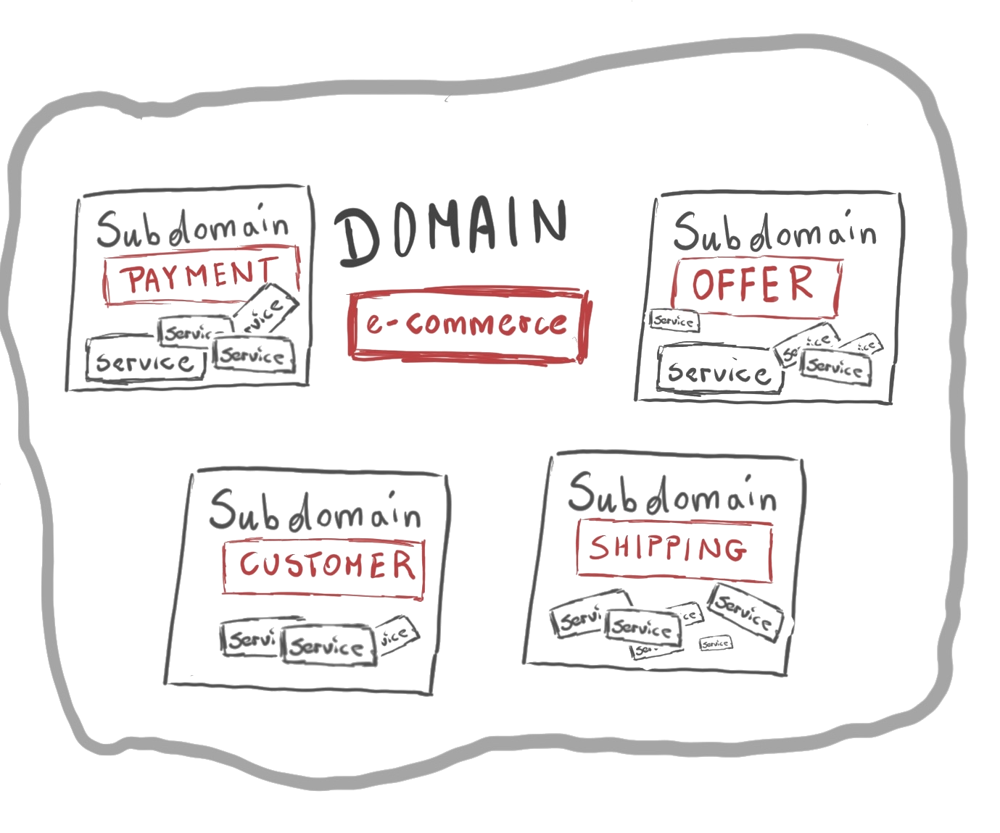
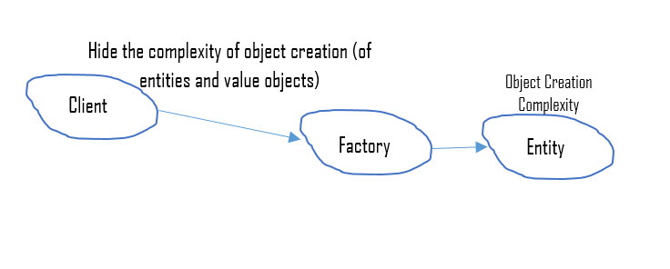

Domain Driven Design
Software Process Engineering
Giovanni Ciatto — giovanni.ciatto@unibo.it
Compiled on: 2023-09-15 — printable version
Motivation and Context
Why a structured design process?
-
You know programming, in many programming languages
-
You know about object-oriented programming and design patterns
-
You know about software architectures and design principles
-
You know about software engineering best practices
What’s the criterion to choose if and when to adopt languages / patterns / architectures / principles / practices?
Recommended workflow
Problem $\xrightarrow{\color{red}analysis}$ Model $\xrightarrow{\color{red}design}$ Architecture $\xrightarrow{implementation}$ Solution
- yet, how to derive the model?
Why Domain Driven Design?
-
Here we present domain-driven design (DDD)
- one of many approaches to software design
-
It consists of principles, best practices, and patterns leading design
- unified under a common philosophy
- focus is on the design workflow, other than the result
-
We prefer it over alternatives for several reasons:
- it stresses adherence to the problem at hand
- it focuses on delivering a business-tailored model
- and, therefore, a business-tailored solution
- it harmonises communication among managers, technicians, and users
- it stresses the production of maintanable and extensible software
About Domain-Driven Design
What is the domain?
-
Definition of domain:
- a well established sphere of knowledge, influence or activity
- the subject area to which the user applies the software
-
Remarks:
- focus is on how users and experts perceive the domain
- focus is not on how developers perceive the domain
-
Examples of domains and the contexts composing them
- some university (department, faculty, HR, etc.)
- some given company (manufacturing, marketing, HR, etc.)
- linear algebra (matrices, complex numbers, polynoms, etc.)
- machine learning (classification, regression, feature selection, etc.)
DDD Philosophy (pt. 1)
-
Software will represent a solution to a problem in some business domain
- it should be modelled & implemented to match that domain
- i.e. modelling should elicit the key aspects of a domain, possibly by interacting with experts
- it should be modelled & implemented to match that domain
-
Words do not have meaning per se, but rather w.r.t. a domain
- i.e. the same word may have different meanings in different domains
- each domain comes with a particular language characterising it
- SW components (interfaces, classes, etc.) should be named after that language
- interaction with experts is essential to identify a domain’s language
DDD Philosophy (pt. 2)
-
SW should stick to the domain, at any moment
- archiecture and implementation should favour adherence to the domain
- in spite of their evolution / modification
- archiecture and implementation should favour adherence to the domain
-
Functionalities, structure, and UX should mirror the domain too
- using the libraries should be natural for developers
- UX should be natural for users
as both developers and users are (supposed to be) immersed in the domain
Main notions (overview)
-
Domain: the reference area of knowledge
-
Context: a portion of the domain
-
Model: a reification of the domain in SW
-
Ubiquitous Language: language used by domain experts and mirrored by the model
Main notions (Domain)
A well established sphere of knowledge, influence or activity
- e.g. some university (department, faculty, HR, etc.), linear algebra, etc.
Main notions (Context)
A portion of the domain:
- relying on a sub-set of the concepts of the domain
- where words/names have a unique, precise meaning
- e.g. departments, divisions, complex numbers, etc.
Main notions (Domain vs. Context)

Main notions (Domain Model)
Set of software abstractions mapping relevant concepts of the domain
- e.g. C# projects, namespaces, interfaces, classes, structures, methods, etc.
Main notions (Ubiquitous Language)
- A language structured around the domain model
- used by all people involved into the domain
- which should be used in the software
- in such a way that their semantics is preserved
-
underlying assumption:
- different people call the same things differently
- especially when they come from different contexts
-
commonly reified into a glossary of terms
-
commonly used to name software components
Conceptual Workflow
-
Identify the domain
-
Identify the main contexts within the domain
- possibly, by interacting with experts
-
Identify the actual meaning of commonly used words within the domain
-
possibly, by interacting with experts
-
without assuming you already know the meaning of words
- i.e. do not rely on (your) common sense
-
keep in mind that the meaning of word may vary among contexts
- this is not just a glossary, but also
- idiomatic or domain-specific expressions
- procedures, events, etc.
- this is not just a glossary, but also
-
-
Adhere to the language, use it, make it yours
- especially when talking about the domain / model / software
- design/sketch code mirroring the language
-
Draw a context map tracking
- the main contexts and their junctions
- words whose meaning varies across contexts
-
Model the software around the ubiquitous language
- rule of thumb: 1 concept $\approx$ 1 interface
Example of context map

Towards building blocks
Domain
- Concept
- instance
$\xrightarrow{modelling}$
Model
- Type
- object
-
Each concept from each context shall become a type in the model
- type $\approx$ class, interface, structure, ADT, etc.
- depends on what the programming language has to offer
- type $\approx$ class, interface, structure, ADT, etc.
-
Use building blocks as archetypes
- let them guide and constrain your design
Workflow
(continued)
-
Chose the most adequate building block for each concept
- depending on the nature of the concept
- … or the properties of its instances
-
The building block dictates how to design the type corresponding to the concept
- objects in OOP are shaped by types
-
The choice of building block may lead to the identification of other concepts / models
- e.g. entities may need value objects as identifiers
- e.g. entities may need repositories to be stored
- e.g. entities may need factories to be created
- e.g. aggregates may be composed by entities or value objects
Building blocks (overview)
-
Entity: objects with an identifier
-
Value Object: objects without identity
-
Aggregate Root: compound objects
-
Domain Event: objects modelling relevant event (notifications)
-
Service objects: providing stateless functionalities
-
Repository: objects providing storage facilities
-
Factory: objects creating other objects
Entities vs. Value Objects
Genus-differentia definition:
- genus: both can be used to model elementary concepts
- differentia: entities have an explicit identity, value objects are interchangeable
Quick modelling examples
Classroom
-
Seats in classroom may be modelled as value-objects
-
Attendees of a class may be modelled as entities
Seats on a plane
-
Numbered seats $\rightarrow$ entities
-
otherwise $\rightarrow$ value objects
Entities vs. Value Objects (practicals)
Constraints of Value Objects
- Identified by their attributes
- equality compares attributes alone
- Must be stateless $\Rightarrow$ require an immutable design
- read-only properties
- lack of state-changing methods
- May be implemented as
- structures in .NET
- data classes in Kotlin, Scala, Python
- records in Java
- Must implement
equals()andhashCode()on JVM- implementation must compare the objects’ attributes
Entities vs. Value Objects (practicals)
Constraints of Entities
- They have an inherent identity, which never changes during their lifespan
- common modelling: identifier attribute, of some value type
- equality compares identity
- Can be stateful $\Rightarrow$ may have a mutable design
- modifiable properties
- state-changing methods
- May be implemented via classes in most languages
- Must implement
equals()andhashCode()on JVM- implementation must compare (at least) the objects’ identifiers
Entities vs. Value Objects (example)
interface Customer { + CustomerID getID() + String getName() + void setName(name: String) + String getEmail() + void setEmail(email: String) } note left: Entity
interface CustomerID { + Object getValue() } note right: Value Object
interface TaxCode { + String getValue() } note left: Value Object
interface VatNumber { + long getValue() } note right: Value Object
VatNumber -d-|> CustomerID TaxCode -d-|> CustomerID
Customer *-r- CustomerID
Aggregate Root
Definition
-
A composite object, aggregating related entities/value objects
-
It ensures the consistency of the objects it contains
-
It mediates the usage of the composing objects from the outside
- acting as a façade
-
Outside objects should avoid holding references to composing objects
Aggregate Root (practicals)
Constraints of Aggregates
-
They are usually compound entities
-
They can be or exploit collections to contain composing items
- they may leverage on the composite pattern
-
May be better implemented as classes in most programming languages
-
Must implement
equals()andhashCode()on JVM- implementation may take composing items into account
-
Components of an aggregate should not hold references to components of other aggregates
- that’s why they are called aggregate roots

Aggregate Root (example)

Factories
Definition
- Objects aimed at creating other objects, in order to:
- encapsulate the creation logic for complex objects
- making it evolvable, interchangeable, replaceable
- ease the enforcement of invariants
- support dynamic selection of the most adequate implementation
- encapsulate the creation logic for complex objects

Remarks
- DDD’s notion of factory is quite wide
- DDD’s Factories $\supset$ GOF’s Factories $\cup$ Builders $\cup$ …
Factories (practicals)
Constraints of Factories
-
They are usually identityless and stateless objects
- recall the abstract factory pattern
-
May be implemented as classes in most OOP languages
-
Provide methods to instantiate entities or value objects
-
Usually they require no mutable field/property
-
No need to implement
equals()andhashCode()on JVM
Factories (example)
interface CustomerID
interface TaxCode
interface VatNumber
interface Customer
Customer “1” *– “1” CustomerID
VatNumber -u-|> CustomerID TaxCode -u-|> CustomerID
interface CustomerFactory { + VatNumber computeVatNumber(String name, String surname, Date birthDate, String birthPlace) – + Customer newCustomerPerson(TaxCode code, String fullName, string email) + Customer newCustomerPerson(String name, String surname, Date birthDate, String birthPlace, String email) – + Customer newCustomerCompany(VatNumber code, String fullName, String email) }
CustomerFactory -r-> VatNumber: creates CustomerFactory -u-> Customer: creates